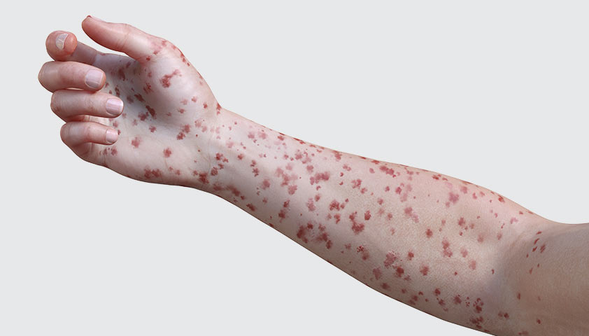

Александр Дудкин, Иван Прокопеня
Изучить основные характеристики вируса Марбург и дифтерии
Рассмотреть методы их диагностики и лечения
Обсудить профилактические меры для предотвращения распространения болезней
 |
Геморрагическая лихорадка с высокой смертностью, вызванная вирусом Марбург
Первая вспышка зарегистрирована в 1967 году в Германии и Югославии
Природный резервуар: африканские летучие мыши Rousettus aegyptiacus
Смертность при вспышках варьируется от 24% до 88%, в зависимости от штамма и условий лечения
Основной путь передачи: контакт с биологическими жидкостями инфицированных людей или животных
Диагностика: анализы крови, ПЦР-тестирование, изоляция вируса
Быстрая диагностика важна для предотвращения распространения инфекции
Симптомы | Высокая температура, сильная головная боль, ломота в теле, слабость |
Прогрессирование | Кровотечения из десен и носа, многократная рвота, нарушение функций печени и почек |
Финальные стадии | Нарушение работы органов, внутренние кровотечения, шок и смерть |
Специфическое лечение не разработано, применяется поддерживающая терапия
Клинические исследования вакцин продолжаются
Профилактика: строгий инфекционный контроль, изоляция инфицированных, использование средств защиты для медицинского персонала
Всемирная организация здравоохранения (ВОЗ) координирует меры по борьбе с инфекционными заболеваниями, включая вирус Марбург и дифтерию
Международные программы по разработке вакцин и обучению медицинских работников
Обеспечение стран с низким уровнем дохода средствами для диагностики и лечения инфекций
Постоянный мониторинг за вспышками инфекций и своевременные рекомендации для населения
Потепление климата способствует изменению ареала обитания переносчиков инфекций, таких как летучие мыши — резервуары вируса Марбург
Изменения климата влияют на миграцию животных, что увеличивает риск контакта людей с вирусоносителями
Влажность и температура могут способствовать выживанию бактерий, вызывающих дифтерию
Необходимы адаптированные методы контроля инфекций с учётом климатических изменений
Бактериальная инфекция, вызванная Corynebacterium diphtheriae
Передача: воздушно-капельным путем или через предметы общего пользования
Поражает дыхательные пути и реже - кожу, глаза и нервную систему
Без лечения может привести к тяжёлым осложнениям, таким как миокардит или паралич
Передача от человека к человеку, чаще всего при чихании или кашле
Диагностика: бактериологический посев, ПЦР, серологические тесты на антитоксины
Важно своевременно распознать болезнь для предотвращения её распространения
Инкубационный период | Обычно 2-5 дней |
Начальные симптомы | Боль в горле, налет серого цвета на миндалинах, затрудненное дыхание |
Прогрессирование | Появление опухолей на шее, общая слабость, осложнения на сердце и нервную систему |
Лечение: антибиотики (например, эритромицин) и антитоксин
Профилактика: вакцинация АКДС, регулярные ревакцинации для поддержания иммунитета
Вспышки болезни контролируются вакцинацией и наблюдением за контактами больных
Наиболее характерный - серо-белые пленочные налеты на небе, миндалинах, задней стенке гортани
Незначительная боль при глотании
Повышение температуры
Увеличение миндалин или лимфоузлов
Отечность шеи
Сладковатый запах изо рта
Воздушно-капельный путь
Контактный путь
Половой путь (для некоторых инфекций)
Быстрое обращение к врачу при появлении первых симптомов
Соблюдение правил личной гигиены
Вакцинация и регулярные медицинские осмотры
| Параметр | Вирус Марбург | Дифтерия |
|---|---|---|
Возбудитель | Вирус семейства Filoviridae | Бактерия Corynebacterium diphtheriae |
Передача | Через контакт с биологическими жидкостями, резервуар — летучие мыши | Воздушно-капельный путь, бытовые предметы |
Летальность | Высокая | Средняя, значительно снижается при лечении |
Профилактика | Инфекционный контроль и изоляция | Вакцинация |
Первая вспышка вируса Марбург — 1967 год, в лабораториях Германии и Югославии
Наибольшее число случаев зафиксировано в Африке, особенно в Уганде и Демократической Республике Конго
Дифтерия была широко распространена в начале 20-го века, но с внедрением вакцинации заболеваемость резко снизилась
Несмотря на вакцинацию, в некоторых регионах вспышки дифтерии происходят из-за снижения уровня прививок
Важность быстрой диагностики и контроля при вспышках вируса Марбург
Эффективность вакцинации как основной меры предотвращения дифтерии
Необходимость изучения и разработки более совершенных методов лечения и вакцин
Роль общества и медицины в предотвращении эпидемий и защите населения